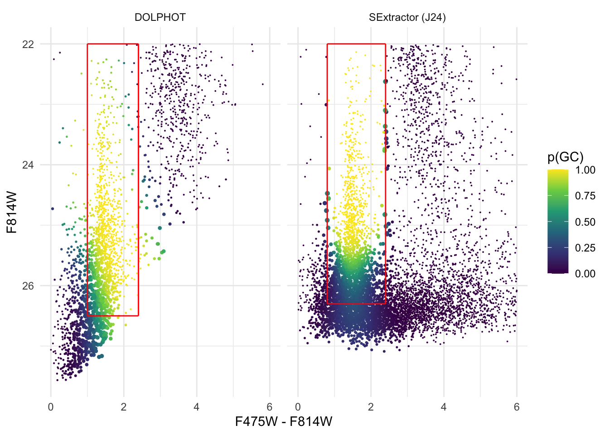
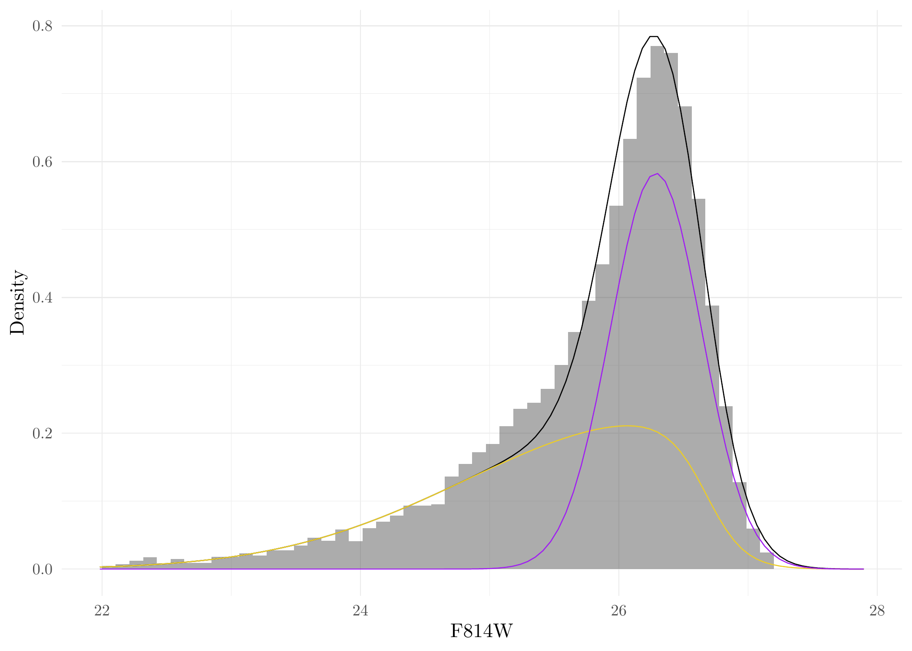

Last updated: 2024-07-15
Checks: 7 0
Knit directory: MATHPOP/
This reproducible R Markdown analysis was created with workflowr (version 1.7.1). The Checks tab describes the reproducibility checks that were applied when the results were created. The Past versions tab lists the development history.
Great! Since the R Markdown file has been committed to the Git repository, you know the exact version of the code that produced these results.
Great job! The global environment was empty. Objects defined in the global environment can affect the analysis in your R Markdown file in unknown ways. For reproduciblity it’s best to always run the code in an empty environment.
The command set.seed(20240702) was run prior to running
the code in the R Markdown file. Setting a seed ensures that any results
that rely on randomness, e.g. subsampling or permutations, are
reproducible.
Great job! Recording the operating system, R version, and package versions is critical for reproducibility.
Nice! There were no cached chunks for this analysis, so you can be confident that you successfully produced the results during this run.
Great job! Using relative paths to the files within your workflowr project makes it easier to run your code on other machines.
Great! You are using Git for version control. Tracking code development and connecting the code version to the results is critical for reproducibility.
The results in this page were generated with repository version 79bc13d. See the Past versions tab to see a history of the changes made to the R Markdown and HTML files.
Note that you need to be careful to ensure that all relevant files for
the analysis have been committed to Git prior to generating the results
(you can use wflow_publish or
wflow_git_commit). workflowr only checks the R Markdown
file, but you know if there are other scripts or data files that it
depends on. Below is the status of the Git repository when the results
were generated:
Ignored files:
Ignored: .DS_Store
Ignored: .Rhistory
Ignored: .Rproj.user/
Ignored: analysis/.DS_Store
Ignored: code/.DS_Store
Ignored: data/.DS_Store
Ignored: data/GC_prob/.DS_Store
Ignored: data/point_source_data/.DS_Store
Ignored: data/prob_GC_data/.DS_Store
Ignored: data/sim/.DS_Store
Ignored: data/v10acs/.DS_Store
Ignored: data/v10wfc3/.DS_Store
Ignored: data/v11acs/.DS_Store
Ignored: data/v11wfc3/.DS_Store
Ignored: data/v12acs/.DS_Store
Ignored: data/v12wfc3/.DS_Store
Ignored: data/v13acs/.DS_Store
Ignored: data/v13wfc3/.DS_Store
Ignored: data/v14acs/.DS_Store
Ignored: data/v14wfc3/.DS_Store
Ignored: data/v15acs/.DS_Store
Ignored: data/v15wfc3/.DS_Store
Ignored: data/v6acs/.DS_Store
Ignored: data/v6wfc3/.DS_Store
Ignored: data/v7acs/.DS_Store
Ignored: data/v8acs/.DS_Store
Ignored: data/v9acs/.DS_Store
Ignored: data/v9wfc3/.DS_Store
Ignored: source/.DS_Store
Ignored: source/v8wfc3/
Untracked files:
Untracked: analysis/CMD_plot_2-1.aux
Untracked: analysis/CMD_plot_2-1.log
Untracked: analysis/CMD_plot_2-1.pdf
Untracked: analysis/plot_ps-1.aux
Note that any generated files, e.g. HTML, png, CSS, etc., are not included in this status report because it is ok for generated content to have uncommitted changes.
These are the previous versions of the repository in which changes were
made to the R Markdown (analysis/data_process.Rmd) and HTML
(docs/data_process.html) files. If you’ve configured a
remote Git repository (see ?wflow_git_remote), click on the
hyperlinks in the table below to view the files as they were in that
past version.
| File | Version | Author | Date | Message |
|---|---|---|---|---|
| Rmd | 79bc13d | david.li | 2024-07-15 | wflow_git_commit(all = T) |
| html | e750655 | david.li | 2024-07-08 | Build site. |
| html | 8fb288d | david.li | 2024-07-07 | Build site. |
| Rmd | 2e42542 | david.li | 2024-07-07 | wflow_git_commit(all = T) |
| html | 3dee3e9 | david.li | 2024-07-06 | Build site. |
| html | dc09c08 | david.li | 2024-07-06 | Build site. |
| html | 64686bd | david.li | 2024-07-06 | Build site. |
| Rmd | 0b7fd29 | david.li | 2024-07-06 | wflow_git_commit(all = T) |
| html | 0a9d403 | david.li | 2024-07-05 | Build site. |
| html | c1fd386 | david.li | 2024-07-04 | Build site. |
| Rmd | 33fc566 | david.li | 2024-07-04 | wflow_git_commit(all = T) |
| html | 33fc566 | david.li | 2024-07-04 | wflow_git_commit(all = T) |
| html | 6ff1ccc | david.li | 2024-07-04 | Build site. |
| html | 65a7d8c | david.li | 2024-07-04 | Build site. |
| Rmd | 98834e5 | david.li | 2024-07-04 | wflow_publish(c("analysis/_site.yml", "analysis/posterior.Rmd", |
This vignette illustrates the methods used to obtain the probabilistic catalogs obtained using point sources from DOLPHOT and SExtractor. It also reproduces Figure 1 and Figure 8 in the original paper of Li et al. (2024)
Read in the point source data obtained by DOLPHOT and SExtractor:
# Load packages
library(tidyverse)
library(tikzDevice)
library(mixtools)
library(Rcpp)
library(MATHPOP)
# Read in DOLPHOT point source data
fnames <- list.files('data/point_source_data/')
ps_harris_fnames <- fnames[!grepl('Jans', fnames)]
dat_harris <- data.frame()
for (i in ps_harris_fnames) {
df <- read_csv(paste0('data/point_source_data/',i))
df <- bind_cols(df, field = rep(i, nrow(df)))
dat_harris <- bind_rows(dat_harris, df)
}
# Read in SExtractor point source data
ps_Jans_fnames <- fnames[grepl('Jans', fnames)]
dat_Jans <- read_csv(paste0('data/point_source_data/', ps_Jans_fnames))We then carry out pre-processing of the point source data. For the DOLPHOT data, we remove point sources with color \(\mathrm{F475W} - \mathrm{F814W} < 0.0~\mathrm{mag}\) and \(\mathrm{F814W} < 22.0~\mathrm{mag}\). Pre-processing of SExtractor data is not needed as the method to obtain the probabilistic GC catalog under SExtractor point source is different.
CMD_harris <- mutate(dat_harris, C = F475W - F814W, M = F814W) %>%
dplyr::select(x, y, RA, DEC, C, M, F814W, F475W, field) %>%
filter(M > 22 & C > 0)For the DOLPHOT point source, the finite-mixture method to obtain the
probabilistic GC catalog is illustrated here.
We have carried out this method 500 times where each time the color and
magnitude are jittered with their measurement uncertainties. As it is
impossible to run and save such a big computational task remotely, we
have saved the locally-run results in the file
DOL_GC_prob_mvnpEM_500_iter.RDS under the
data/GC_prob/ folder of the Github repo. Read in this data
and process it:
# read in results from 500 iteration of the finite-mixture method
GC_prob_ls_Harris <- readRDS('data/GC_prob/DOL_GC_prob_mvnpEM_500_iter.RDS')
# extract the probability a source is a GC
GC_probability_Harris <- do.call(cbind,lapply(GC_prob_ls_Harris, function(x) x$posterior[, which.max(x$lambdahat)]))
# name the column
colnames(GC_probability_Harris) <- c(paste0('p', 1:500))
# add it to the previous point source data.frame
CMD_harris <- bind_cols(CMD_harris, GC_probability_Harris)
# obtain summary statistics of the probability from the 500 iterations
CMD_harris$p <- rowMeans(GC_probability_Harris)
CMD_harris$p_sd <- apply(GC_probability_Harris, 1, sd)After obtaining the point source data with all 500 probabilities, we save them into individual files based on their imaging field ID for later inference.
# Only run once
for (i in ps_harris_fnames) {
write_csv(filter(CMD_harris, field == i), paste0('data/prob_GC_data/',unlist(strsplit(i, split = '.', fixed = T))[1],'_pGC.csv'))
}For the SExtractor data, a different parametric finite-mixture model
was used. For a detailed explanation of the method, see Appendix B.2 of
the original Li et al. (2024) paper. We have written a function called
mix_func() in the code/help_functions.R to fit
the parametric finite-mixture model.
Similar to DOLPHOT data, we apply our proposed parametric
finite-mixture model to the measurement uncertainty jittered
color-magnitude data for 500 times, this is carried out by the function
meas_uncertain_mix_func():
# This may take a while, but still much faster than the previous non-parametric finite mixture model used for DOLPHOT
Jans_res <- meas_uncertain_mix_func(dat = dat_Jans, n_iter = 500)Get the results from the previous run, and attach it to the
SExtractor point source data.frame.
# get the probabilities
p_mat <- Jans_res$prob
# summary statistics for the probability a point source is a GC
dat_Jans$p <- rowMeans(Jans_res$prob)
dat_Jans$p_sd <- apply(Jans_res$prob, 1, sd)
# restructure the data frame for later inference
dat_Jans_save <- dat_Jans %>%
dplyr::select(x, y, RA, DEC, C, F814W, field) %>%
mutate(M = F814W) %>%
dplyr::select(x, y, RA, DEC, C, M, field)
colnames(Jans_res$prob) <- c(paste0('p', 1:500))
Jans_res$prob <- data.frame(Jans_res$prob)
dat_Jans_save <- bind_cols(dat_Jans_save, p_mat)Again, we save the probabilistic GC catalog from SExtractor into individual files based on their imaging field ID for later inference.
# save the probabilistic GC catalog into individual files (only run once)
for (i in unique(dat_Jans_save$field)) {
write_csv(filter(dat_Jans_save, field == i), paste0('data/prob_GC_data/', i,'_pGC_Jans.csv'))
}Now we can plot the obtained data and regenerate Figure 1 in the original Li et al. (2024) paper. Note that due to Latex memory constraints, not all point sources can be plotted in the figure, so we only plotted half of the sources.
# combine the two point source data in one data frame
frac_CMD_harris <- CMD_harris %>%
dplyr::select(C, M, p, p_sd) %>%
mutate(data = 'DOLPHOT')
frac_CMD_Jans <- dat_Jans %>%
dplyr::select(C, F814W, p, p_sd) %>%
mutate(data = 'SExtractor (J24)', M = F814W) %>%
dplyr::select(C, M, p, p_sd, data)
# select half of the sources to be plotted
set.seed(123456)
frac_CMD <- bind_rows(frac_CMD_harris[sample(1:nrow(frac_CMD_harris), 0.5*nrow(frac_CMD_harris), replace = F),],
frac_CMD_Jans[sample(1:nrow(frac_CMD_Jans), 0.5*nrow(frac_CMD_Jans), replace = F),])
ggplot(frac_CMD, aes(C, M, color = p)) + geom_point(aes(size = p_sd*2.5)) +
scale_size_identity() +
scale_y_reverse() + theme_minimal() +
xlab('F475W - F814W') + ylab('F814W') +
scale_colour_viridis_c(name = 'p(GC)') +
geom_segment(data = data.frame(xmin = c(0.8, 0.8, 2.4, 0.8),
xmax = c(2.4, 0.8, 2.4, 2.4),
ymin = c(26.3, 22, 22, 22),
ymax = c(26.3, 26.3, 26.3, 22),
data = 'SExtractor (J24)'),
aes(x = xmin, xend = xmax, y = ymin, yend = ymax), colour = 'red') +
geom_segment(data = data.frame(xmin = c(1, 1, 2.4, 1),
xmax = c(2.4, 1, 2.4, 2.4),
ymin = c(26.5, 22, 22, 22),
ymax = c(26.5, 26.5, 26.5, 22),
data = 'DOLPHOT'),
aes(x = xmin, xend = xmax, y = ymin, yend = ymax), colour = 'red') +
facet_wrap(.~data)
We can now also plot the results for the fitted parametric finite-mixture model for SExtractor point source data. These are effectively Figure 8(a) and 8(b) in the paper. First, get the estimated parameters from the fitted results:
# average of the fitted mixture model model parameters
w <- mean(Jans_res$par[,1])
wr <- mean(Jans_res$par[,2])
GCLF_TO <- 26.3 # canonical GCLF TO
GCLF_sig <- mean(Jans_res$par[,3])
GC_color_mu_r <- mean(Jans_res$par[,4])
GC_color_sig_r <- mean(Jans_res$par[,5])
GC_color_mu_b <- mean(Jans_res$par[,6])
GC_color_sig_b <- mean(Jans_res$par[,7])
mu <- mean(Jans_res$par[,8])
sigma <- mean(Jans_res$par[,9])
Phi <- Phi_f_cpp(26.69, GCLF_TO, GCLF_sig, a = 6.56)Generate Figure 8a in the original paper of Li et al. (2024):
ggplot(Jans_res$sim, aes(F814W)) + geom_histogram(aes(y = after_stat(count)/sum(count)/.05253/2),breaks = seq(22, 27.2, length = 50), alpha = 0.5) +
geom_function(fun = function(x) w*dnorm(x, GCLF_TO, GCLF_sig)*f_cpp(x, 26.69, 6.56)/Phi + (1-w)*dnorm(x, mu, sigma)) +
geom_function(fun = function(x) w*dnorm(x, GCLF_TO, GCLF_sig)*f_cpp(x, 26.69, 6.56)/Phi, color = "#EBCC2A") +
geom_function(fun = function(x) (1-w)*dnorm(x, mu, sigma), color = 'purple') + ylab('Density') + theme_minimal() 
Generate Figure 8b in the original paper of Li et al. (2024):
ggplot(Jans_res$sim, aes(C)) + geom_histogram(aes(y = after_stat(count)/sum(count)/0.032),breaks = seq(0.8, 2.4, length = 50), alpha = 0.5) +
geom_function(fun = function(x) w*(wr*dnorm(x, GC_color_mu_r, GC_color_sig_r) + (1-wr)*dnorm(x, GC_color_mu_b, GC_color_sig_b)) + (1-w)*dunif(x, 0.8, 2.4)) +
geom_function(fun = function(x) w*(wr*dnorm(x, GC_color_mu_r, GC_color_sig_r) + (1-wr)*dnorm(x, GC_color_mu_b, GC_color_sig_b)), color = "#EBCC2A") +
geom_function(fun = function(x) w*wr*dnorm(x, GC_color_mu_r, GC_color_sig_r), color = '#3B9AB2') +
geom_function(fun = function(x) w*(1-wr)*dnorm(x, GC_color_mu_b, GC_color_sig_b), color = "#FF0000") +
geom_function(fun = function(x) (1-w)*dunif(x, 0.8, 2.4), color = 'purple') + ylab('Density') + theme_minimal() + xlab('F475W - F814W')
sessionInfo()R version 4.3.2 (2023-10-31)
Platform: aarch64-apple-darwin20 (64-bit)
Running under: macOS Sonoma 14.1.1
Matrix products: default
BLAS: /Library/Frameworks/R.framework/Versions/4.3-arm64/Resources/lib/libRblas.0.dylib
LAPACK: /Library/Frameworks/R.framework/Versions/4.3-arm64/Resources/lib/libRlapack.dylib; LAPACK version 3.11.0
locale:
[1] en_US.UTF-8/en_US.UTF-8/en_US.UTF-8/C/en_US.UTF-8/en_US.UTF-8
time zone: America/Toronto
tzcode source: internal
attached base packages:
[1] stats graphics grDevices utils datasets methods base
other attached packages:
[1] MATHPOP_0.0.0.9000 Rcpp_1.0.12 mixtools_2.0.0 tikzDevice_0.12.6
[5] lubridate_1.9.3 forcats_1.0.0 stringr_1.5.1 dplyr_1.1.4
[9] purrr_1.0.2 readr_2.1.5 tidyr_1.3.1 tibble_3.2.1
[13] ggplot2_3.5.1 tidyverse_2.0.0 workflowr_1.7.1
loaded via a namespace (and not attached):
[1] tensorA_0.36.2.1 rstudioapi_0.16.0 jsonlite_1.8.8
[4] magrittr_2.0.3 magick_2.8.3 spatstat.utils_3.0-5
[7] farver_2.1.2 rmarkdown_2.27 fs_1.6.4
[10] vctrs_0.6.5 spatstat.explore_3.2-7 askpass_1.2.0
[13] terra_1.7-78 tinytex_0.51 htmltools_0.5.8.1
[16] progress_1.2.3 distributional_0.4.0 raster_3.6-26
[19] sass_0.4.9 KernSmooth_2.23-22 bslib_0.7.0
[22] pdftools_3.4.0 htmlwidgets_1.6.4 plyr_1.8.9
[25] plotly_4.10.4 cachem_1.1.0 whisker_0.4.1
[28] lifecycle_1.0.4 pkgconfig_2.0.3 Matrix_1.6-3
[31] R6_2.5.1 fastmap_1.2.0 clue_0.3-65
[34] digest_0.6.36 colorspace_2.1-0 ggnewscale_0.4.10
[37] spatial_7.3-17 ps_1.7.7 rprojroot_2.0.4
[40] tensor_1.5 spatstat.linnet_3.1-5 labeling_0.4.3
[43] fansi_1.0.6 spatstat.sparse_3.1-0 timechange_0.3.0
[46] httr_1.4.7 polyclip_1.10-6 abind_1.4-5
[49] mgcv_1.9-0 compiler_4.3.2 proxy_0.4-27
[52] bit64_4.0.5 withr_3.0.0 backports_1.5.0
[55] DBI_1.2.3 spatstat.model_3.2-11 highr_0.11
[58] HDInterval_0.2.4 MASS_7.3-60 classInt_0.4-10
[61] loo_2.7.0 fBasics_4032.96 wesanderson_0.3.7
[64] tools_4.3.2 units_0.8-5 filehash_2.4-6
[67] httpuv_1.6.12 goftest_1.2-3 glue_1.7.0
[70] stabledist_0.7-1 callr_3.7.6 nlme_3.1-163
[73] promises_1.3.0 grid_4.3.2 sf_1.0-16
[76] checkmate_2.3.1 getPass_0.2-4 reshape2_1.4.4
[79] cluster_2.1.4 generics_0.1.3 gtable_0.3.5
[82] spatstat.data_3.1-2 tzdb_0.4.0 class_7.3-22
[85] data.table_1.15.4 hms_1.1.3 rmutil_1.1.10
[88] sp_2.1-4 utf8_1.2.4 spatstat.geom_3.2-9
[91] pillar_1.9.0 vroom_1.6.5 posterior_1.6.0
[94] later_1.3.2 splines_4.3.2 lattice_0.22-5
[97] klippy_0.0.0.9500 bit_4.0.5 survival_3.5-7
[100] deldir_2.0-4 tidyselect_1.2.1 knitr_1.48
[103] git2r_0.33.0 gridExtra_2.3 stats4_4.3.2
[106] xfun_0.45 matrixStats_1.3.0 timeDate_4032.109
[109] stringi_1.8.4 VGAM_1.1-11 qpdf_1.3.3
[112] lazyeval_0.2.2 yaml_2.3.9 evaluate_0.24.0
[115] codetools_0.2-19 kernlab_0.9-32 spatstat_3.0-8
[118] timeSeries_4032.109 cli_3.6.3 rpart_4.1.21
[121] priorsense_1.0.1 segmented_2.1-0 munsell_0.5.1
[124] processx_3.8.4 jquerylib_0.1.4 stable_1.1.6
[127] spatstat.random_3.2-3 parallel_4.3.2 modeest_2.4.0
[130] assertthat_0.2.1 prettyunits_1.2.0 ggstar_1.0.4
[133] viridisLite_0.4.2 scales_1.3.0 e1071_1.7-14
[136] ggridges_0.5.6 statip_0.2.3 crayon_1.5.3
[139] rlang_1.1.4